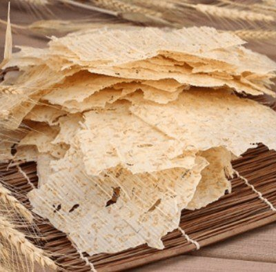
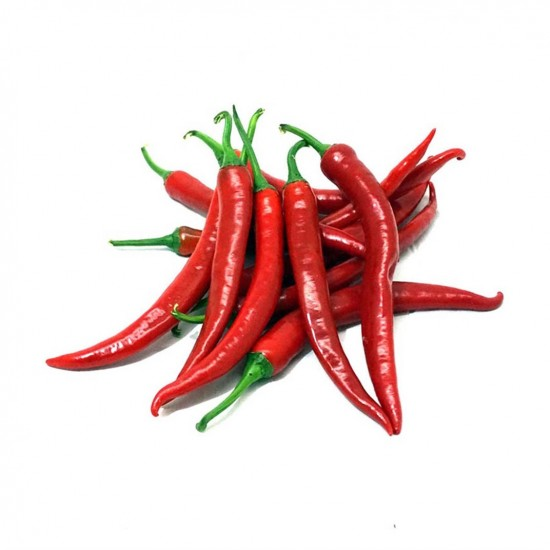

Kahramanmaraş, Türkiye'nin bir ilidir. Kahramanmaraş merkezli ilin
doğusunda Malatya
ve Adıyaman, batısında Kayseri ve Adana, güneyinde Gaziantep ve
Osmaniye,
kuzeyinde Sivas illeri yer almaktadır. 2023 sonu verilerine göre nüfusu
1.116.618'dir.
| dondurma | maras tarhana | acı biber |
|---|---|---|
|  |  |